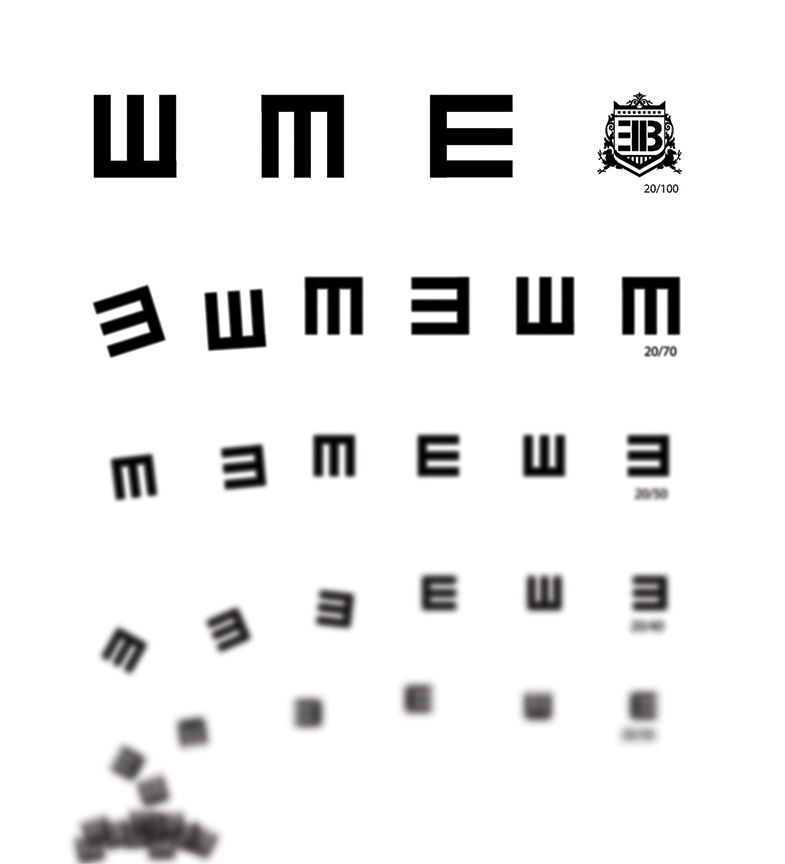

- 

Branding
Exchange Bureau Music
Band turned label turned up. Exchange Bureau came out of no where and went right back to the same place leaving a trail of audio carnage in it's wake. It was a privallege to work with so many talented Detroiters.